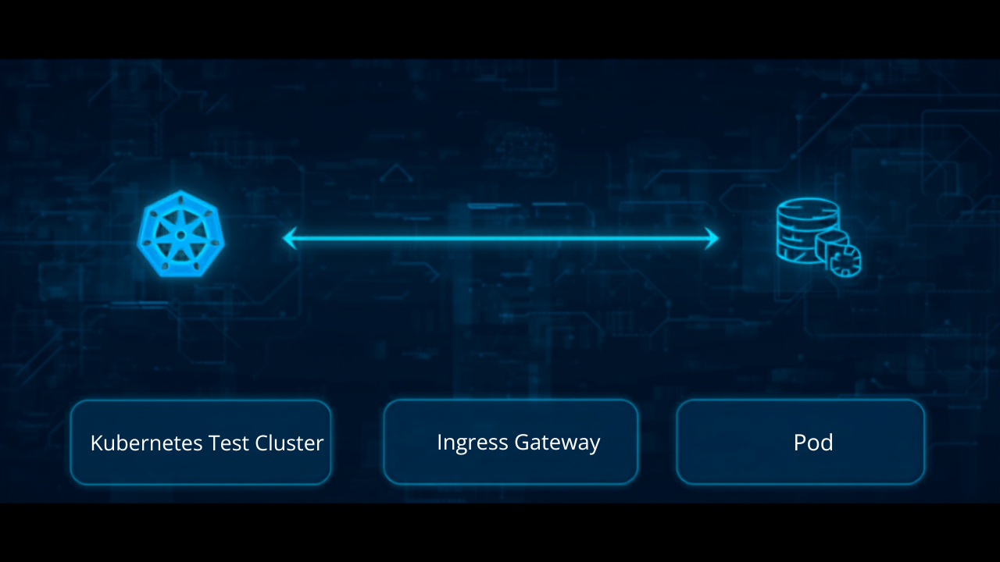

🤖 Implement the Explainer in Canva via Canva MCP
A third path to the same Kubernetes flow example, alongside
explainer.html (the coded engine) and
canva-guide.html (build it by hand in
Canva). This one uses Canva's MCP server tools —
generate-design, create-design-from-candidate,
export-design — driven by an AI agent, so the "creative
part" (background + three lower-third label cards, matching
problem.md's
spec) happens without a human clicking through the Canva editor, and the
agent hands back a link to the finished design.
🎬 Result
Generated from a single prompt describing the same content
explainer.html defaults to
(LowerThirds.PRESETS.kubernetes: Cluster → Ingress
Gateway → Pod) — background flow diagram plus three rounded,
dark-teal lower-third cards with a cyan icon and white serif text
each, per problem.md.

Design link (created live via Canva MCP for this page): canva.com/d/BakYBGi9j-kkuj2 — open it, duplicate it into your own account, and use it as a starting point (add entrance animations per canva-guide.html's step 5 — MCP generation produces the static composition, not the per-card Rise timing, which is still a manual Canva editor step today).
🪜 How it was made (the actual tool calls)
No manual Canva UI work — every step below is an MCP tool call an agent (this one, or your own) can make against Canva's MCP server.
1. Generate design candidates
generate-design with design_type: "youtube_thumbnail"
(a 16:9 canvas, the same aspect ratio this project's background image
and video outputs use) and a prompt describing the content and the
exact visual spec — background flow (Cluster → Ingress Gateway → Pod),
card colors (#0B1B1E @ 85% opacity, cyan
#00D2D2 icon, white serif text), rounded corners, thin
semi-transparent border. This returns several candidate designs to
pick from, not a final editable one yet.
2. Turn a candidate into a real, editable design
create-design-from-candidate with the chosen
candidate_id and the job_id from step 1.
This is the step that actually creates the design in the connected
Canva account and returns a design ID plus edit_url/
view_url — the link referenced above.
3. Export a preview
get-export-formats to confirm PNG is supported for this
design, then export-design with
format: {"type": "png"} to get a download URL. That
export URL is a short-lived signed S3 link, so the image embedded on
this page was downloaded once and committed to
assets/canva-mcp-explainer-preview.png rather than
linked directly — the Canva design link above is the durable
reference, this PNG is just a static snapshot of it.
🗣️ Prompt to give an AI agent
If your MCP client is already connected to Canva's MCP server, copy this straight into your agent's chat to reproduce the design above (or swap in your own three stages):
Using the Canva MCP tools, generate a 16:9 design (design_type "youtube_thumbnail") showing a Kubernetes request flow: Cluster on the left, Ingress Gateway in the middle, Pod on the right, connected by directional arrows. Overlay three rounded "lower third" label cards near the bottom, one per stage, each with an icon on the left and bold white serif text on the right: 🖥️ "Kubernetes Test Cluster", 🚪 "Ingress Gateway", 📦 "Pod". Cards: dark teal near-black background (#0B1B1E) at 85% opacity, rounded corners 24-30px, thin semi-transparent white border, cyan (#00D2D2) icon color, matching this repo's problem.md spec. Then call create-design-from-candidate on the best result and give me the resulting design link.
🤔 This vs. the other two paths
- Use this Canva MCP path if you want a Canva design to hand off or keep editing, but don't want to place elements and type colors by hand — describe the content once and let an agent generate the starting composition, then fine-tune (positions, per-card Rise timing) in the editor.
- Use canva-guide.html for full manual control over every element, image, and animation from the start — useful when the content-matched background needs a careful, specific prompt rather than a general description.
- Use explainer.html/video-recorded.html/video-live.html for the exact coded spring physics, instant re-typing of new text, or a downloadable video/live overlay — see mcp-guide.html for driving those programmatically too.